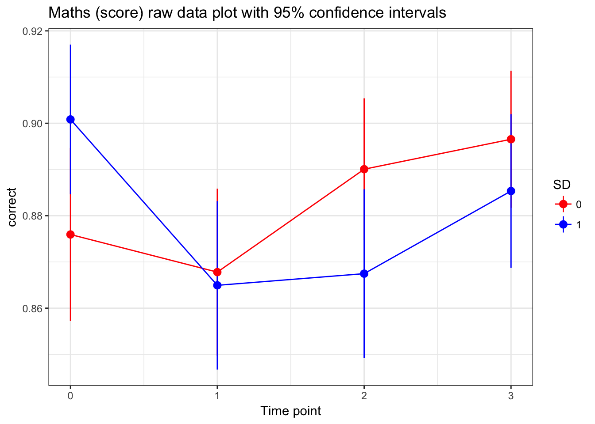
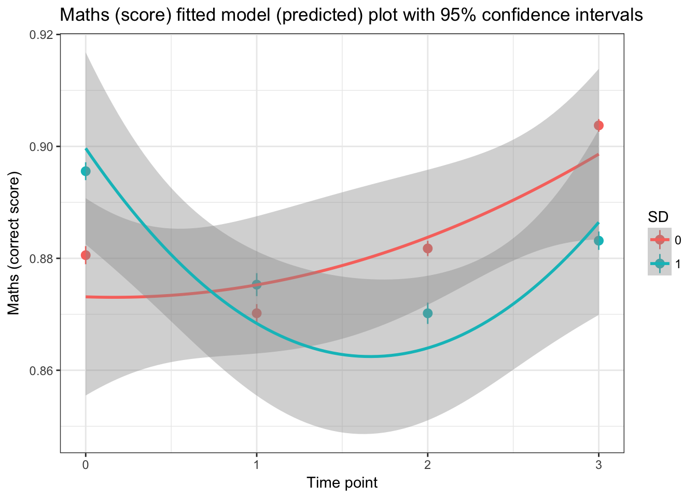
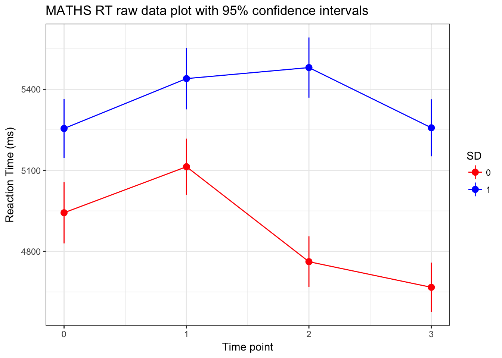
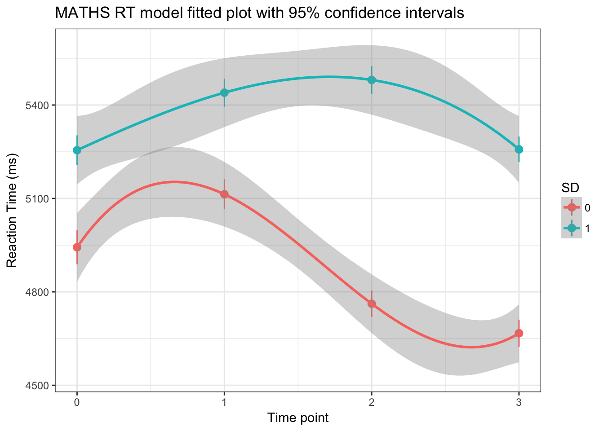

(must respond between 0.1 and 10 seconds)
Maths_Complete_TIDY <- Maths_Complete_TIDY[which(Maths_Complete_TIDY$time_m > 100 & Maths_Complete_TIDY$time_m < 10000),]# assessing the best time polynomial
model.3a<-glmer(correct~1 + (1|ID), data=Maths_Complete_TIDY, family=binomial)
model.3b<-glmer(correct~time + (1|ID), data=Maths_Complete_TIDY, family=binomial)
model.3c<-glmer(correct~time + I(time^2) + (1|ID), data=Maths_Complete_TIDY, family=binomial) #best
model.3d<-glmer(correct~time + I(time^2) + I(time^3) + (1|ID), data=Maths_Complete_TIDY, family=binomial)
anova(model.3a, model.3b, model.3c, model.3d) #quadratic effect is best ## Data: Maths_Complete_TIDY
## Models:
## model.3a: correct ~ 1 + (1 | ID)
## model.3b: correct ~ time + (1 | ID)
## model.3c: correct ~ time + I(time^2) + (1 | ID)
## model.3d: correct ~ time + I(time^2) + I(time^3) + (1 | ID)
## Df AIC BIC logLik deviance Chisq Chi Df Pr(>Chisq)
## model.3a 2 8067.4 8082.0 -4031.7 8063.4
## model.3b 3 8068.6 8090.6 -4031.3 8062.6 0.8026 1 0.370303
## model.3c 4 8063.6 8092.9 -4027.8 8055.6 7.0165 1 0.008076 **
## model.3d 5 8064.1 8100.7 -4027.1 8054.1 1.4695 1 0.225427
## ---
## Signif. codes: 0 '***' 0.001 '**' 0.01 '*' 0.05 '.' 0.1 ' ' 1# assessing the best random effects term (taking just a linear effect of time)
#model.4a<-glmer(correct~time + I(time^2) + I(time^3) + (1|ID), data=Maths_Complete_TIDY, family=binomial)
#model.4b<-glmer(correct~time + I(time^2) + I(time^3) + (time|ID), data=Maths_Complete_TIDY, family=binomial)
#anova(model.4a,model.4b) #doesn't converge
#additing in variables can that explain intercept and slope variability
model.6a<-glmer(correct~time + I(time^2) + (1|ID), data=Maths_Complete_TIDY, family=binomial)
model.6b<-glmer(correct~time + SD + I(time^2) + (1|ID), data=Maths_Complete_TIDY, family=binomial)
model.6c <- glmer(correct~SD*time + I(time^2) + (1|ID), data=Maths_Complete_TIDY, family=binomial) #best model
model.6d <-glmer(correct~SD*time + SD*I(time^2) + (1|ID), data=Maths_Complete_TIDY, family=binomial)
anova(model.6a,model.6b,model.6c,model.6d) #best model = significant interaction between linear time effect and SDcondition## Data: Maths_Complete_TIDY
## Models:
## model.6a: correct ~ time + I(time^2) + (1 | ID)
## model.6b: correct ~ time + SD + I(time^2) + (1 | ID)
## model.6c: correct ~ SD * time + I(time^2) + (1 | ID)
## model.6d: correct ~ SD * time + SD * I(time^2) + (1 | ID)
## Df AIC BIC logLik deviance Chisq Chi Df Pr(>Chisq)
## model.6a 4 8063.6 8092.9 -4027.8 8055.6
## model.6b 5 8065.5 8102.2 -4027.8 8055.5 0.0321 1 0.85789
## model.6c 6 8062.2 8106.2 -4025.1 8050.2 5.3175 1 0.02111 *
## model.6d 7 8061.5 8112.8 -4023.8 8047.5 2.7204 1 0.09908 .
## ---
## Signif. codes: 0 '***' 0.001 '**' 0.01 '*' 0.05 '.' 0.1 ' ' 1Bottom line: significant interaction between linear time effect and SDcondition (ie. sleep deprivation predicts a decrease over time in a linear fashion (despite the cubic effect of time))
#best model
summary(model.6c)## Generalized linear mixed model fit by maximum likelihood (Laplace
## Approximation) [glmerMod]
## Family: binomial ( logit )
## Formula: correct ~ SD * time + I(time^2) + (1 | ID)
## Data: Maths_Complete_TIDY
##
## AIC BIC logLik deviance df.resid
## 8062.2 8106.2 -4025.1 8050.2 11173
##
## Scaled residuals:
## Min 1Q Median 3Q Max
## -4.2321 0.3089 0.3447 0.3793 0.6814
##
## Random effects:
## Groups Name Variance Std.Dev.
## ID (Intercept) 0.1371 0.3703
## Number of obs: 11179, groups: ID, 165
##
## Fixed effects:
## Estimate Std. Error z value Pr(>|z|)
## (Intercept) 1.98289 0.09199 21.554 < 2e-16 ***
## SD 0.18401 0.12058 1.526 0.12701
## time -0.15016 0.09828 -1.528 0.12655
## I(time^2) 0.07802 0.02972 2.625 0.00865 **
## SD:time -0.12675 0.05472 -2.316 0.02054 *
## ---
## Signif. codes: 0 '***' 0.001 '**' 0.01 '*' 0.05 '.' 0.1 ' ' 1
##
## Correlation of Fixed Effects:
## (Intr) SD time I(t^2)
## SD -0.658
## time -0.603 0.205
## I(time^2) 0.373 -0.007 -0.919
## SD:time 0.465 -0.713 -0.272 -0.007
## convergence code: 0
## Model failed to converge with max|grad| = 0.00365401 (tol = 0.001, component 1)Maths_Complete_TIDY$SD <- as.factor(Maths_Complete_TIDY$SD)
Maths.final.model <- model.6c
#raw plot
ggplot(Maths_Complete_TIDY, aes(time, correct, colour=SD)) +
stat_summary(fun.data=mean_cl_normal, fun.args=list(conf.int=0.95), geom="pointrange") +
labs(y="correct", x="Time point") +
ggtitle("Maths (score) raw data plot with 95% confidence intervals") +
theme_bw() + scale_color_manual(values=c("red", "blue")) +
stat_summary(fun.y=mean, geom="line") 
#model plot
ggplot(Maths_Complete_TIDY, aes(time, correct, colour=SD)) +
labs(y="Maths (correct score)", x="Time point") +
theme_bw() +
ggtitle("Maths (score) fitted model (predicted) plot with 95% confidence intervals") +
stat_summary(aes(y=fitted(Maths.final.model)), fun.data=mean_cl_normal, fun.args=list(conf.int=0.95), geom="pointrange") +
stat_smooth(method = "lm", formula =y ~ poly(x,2))
Maths_complete_correct <- Maths_Complete_TIDY[which(Maths_Complete_TIDY$correct == 1),]
# assessing the best time polynomial
model.7a<-lme(time_m~1, random=~1|ID, data=Maths_complete_correct, na.action=na.omit, method="ML")
model.7b<-lme(time_m~time, random=~1|ID, data=Maths_complete_correct, na.action=na.omit, method="ML")
model.7c<-lme(time_m~time+I(time^2), random=~1|ID, data=Maths_complete_correct, na.action=na.omit, method="ML")
model.7d<-lme(time_m~time+I(time^2)+I(time^3), random=~1|ID, data=Maths_complete_correct, na.action=na.omit, method="ML")
anova(model.7a, model.7b, model.7c, model.7d) #best to have cubic effect## Model df AIC BIC logLik Test L.Ratio p-value
## model.7a 1 3 174810.0 174831.6 -87402.01
## model.7b 2 4 174786.0 174814.8 -87388.99 1 vs 2 26.031019 <.0001
## model.7c 3 5 174769.2 174805.2 -87379.59 2 vs 3 18.810012 <.0001
## model.7d 4 6 174763.5 174806.7 -87375.75 3 vs 4 7.678004 0.0056# assessing the best random effects term
model.8a<-lme(time_m~time+I(time^2)+I(time^3), random=~1|ID, data=Maths_complete_correct, na.action=na.omit, method="ML")
model.8b<-lme(time_m~time+I(time^2)+I(time^3), random=~time|ID, data=Maths_complete_correct, na.action=na.omit, method="ML")
anova(model.8a,model.8b) #having random slopes is best #having random effects is better## Model df AIC BIC logLik Test L.Ratio p-value
## model.8a 1 6 174763.5 174806.7 -87375.75
## model.8b 2 8 174751.6 174809.2 -87367.82 1 vs 2 15.85939 4e-04#additing in variables can that explain intercept and slope variability
model.9a<-lme(time_m~time+I(time^2)+I(time^3), random=~time|ID, data=Maths_complete_correct, na.action=na.omit, method="ML")
model.9b<-lme(time_m~time+SD+I(time^2)+I(time^3), random=~time|ID, data=Maths_complete_correct, na.action=na.omit, method="ML")
model.9c <-lme(time_m~time*SD+I(time^2)+I(time^3), random=~time|ID, data=Maths_complete_correct, na.action=na.omit, method="ML")
model.9d <- lme(time_m~time*SD+SD*I(time^2)+I(time^3), random=~time|ID, data=Maths_complete_correct, na.action=na.omit, method="ML")
model.9e <- lme(time_m~time*SD+SD*I(time^2)+SD*I(time^3), random=~time|ID, data=Maths_complete_correct, na.action=na.omit, method="ML")
anova(model.9a,model.9b, model.9c, model.9d, model.9e) # Best model has interactions with SD and all time polynomials## Model df AIC BIC logLik Test L.Ratio p-value
## model.9a 1 8 174751.6 174809.2 -87367.82
## model.9b 2 9 174744.4 174809.1 -87363.19 1 vs 2 9.264135 0.0023
## model.9c 3 10 174735.0 174807.0 -87357.50 2 vs 3 11.384479 0.0007
## model.9d 4 11 174736.4 174815.5 -87357.18 3 vs 4 0.630791 0.4271
## model.9e 5 12 174732.8 174819.1 -87354.38 4 vs 5 5.596229 0.0180#best model
summary(model.9e) #SD interacts with time polynomials with random slopes for time within individuals## Linear mixed-effects model fit by maximum likelihood
## Data: Maths_complete_correct
## AIC BIC logLik
## 174732.8 174819.1 -87354.38
##
## Random effects:
## Formula: ~time | ID
## Structure: General positive-definite, Log-Cholesky parametrization
## StdDev Corr
## (Intercept) 872.2652 (Intr)
## time 118.5123 -0.27
## Residual 1666.1744
##
## Fixed effects: time_m ~ time * SD + SD * I(time^2) + SD * I(time^3)
## Value Std.Error DF t-value p-value
## (Intercept) 5336.612 113.55433 9686 46.99611 0.0000
## time 637.441 190.86575 9686 3.33974 0.0008
## SD1 227.970 156.62375 163 1.45553 0.1474
## I(time^2) -626.315 162.36170 9686 -3.85753 0.0001
## I(time^3) 125.154 35.08248 9686 3.56741 0.0004
## time:SD1 -369.173 270.61268 9686 -1.36421 0.1725
## SD1:I(time^2) 520.928 234.39423 9686 2.22245 0.0263
## SD1:I(time^3) -120.820 51.07964 9686 -2.36532 0.0180
## Correlation:
## (Intr) time SD1 I(t^2) I(t^3) tm:SD1 SD1:I(^2
## time -0.269
## SD1 -0.725 0.195
## I(time^2) 0.158 -0.957 -0.114
## I(time^3) -0.120 0.909 0.087 -0.989
## time:SD1 0.190 -0.705 -0.254 0.675 -0.641
## SD1:I(time^2) -0.109 0.663 0.146 -0.693 0.685 -0.958
## SD1:I(time^3) 0.083 -0.625 -0.110 0.679 -0.687 0.910 -0.989
##
## Standardized Within-Group Residuals:
## Min Q1 Med Q3 Max
## -2.4608719 -0.7341433 -0.1571744 0.6287943 3.8579657
##
## Number of Observations: 9857
## Number of Groups: 165#best model
summary(model.9e) #SD interacts with time polynomials with random slopes for time within individuals## Linear mixed-effects model fit by maximum likelihood
## Data: Maths_complete_correct
## AIC BIC logLik
## 174732.8 174819.1 -87354.38
##
## Random effects:
## Formula: ~time | ID
## Structure: General positive-definite, Log-Cholesky parametrization
## StdDev Corr
## (Intercept) 872.2652 (Intr)
## time 118.5123 -0.27
## Residual 1666.1744
##
## Fixed effects: time_m ~ time * SD + SD * I(time^2) + SD * I(time^3)
## Value Std.Error DF t-value p-value
## (Intercept) 5336.612 113.55433 9686 46.99611 0.0000
## time 637.441 190.86575 9686 3.33974 0.0008
## SD1 227.970 156.62375 163 1.45553 0.1474
## I(time^2) -626.315 162.36170 9686 -3.85753 0.0001
## I(time^3) 125.154 35.08248 9686 3.56741 0.0004
## time:SD1 -369.173 270.61268 9686 -1.36421 0.1725
## SD1:I(time^2) 520.928 234.39423 9686 2.22245 0.0263
## SD1:I(time^3) -120.820 51.07964 9686 -2.36532 0.0180
## Correlation:
## (Intr) time SD1 I(t^2) I(t^3) tm:SD1 SD1:I(^2
## time -0.269
## SD1 -0.725 0.195
## I(time^2) 0.158 -0.957 -0.114
## I(time^3) -0.120 0.909 0.087 -0.989
## time:SD1 0.190 -0.705 -0.254 0.675 -0.641
## SD1:I(time^2) -0.109 0.663 0.146 -0.693 0.685 -0.958
## SD1:I(time^3) 0.083 -0.625 -0.110 0.679 -0.687 0.910 -0.989
##
## Standardized Within-Group Residuals:
## Min Q1 Med Q3 Max
## -2.4608719 -0.7341433 -0.1571744 0.6287943 3.8579657
##
## Number of Observations: 9857
## Number of Groups: 165Maths_complete_correct$SD <- as.factor(Maths_complete_correct$SD)
#raw data plot with 95% confidence intervals
ggplot(Maths_complete_correct, aes(time, time_m, colour=SD)) +
stat_summary(fun.data=mean_cl_normal, fun.args=list(conf.int=0.95), geom="pointrange") +
labs(y="Reaction Time (ms)", x="Time point") +
ggtitle("MATHS RT raw data plot with 95% confidence intervals") +
theme_bw() + scale_color_manual(values=c("red", "blue")) +
stat_summary(fun.y=mean, geom="line") 
#fitted model (aka predictive values) plot with 95% confidence intervals
ggplot(Maths_complete_correct, aes(time, time_m, colour=SD)) +
labs(y="Reaction Time (ms)", x="Time point") +
ggtitle("MATHS RT model fitted plot with 95% confidence intervals") +
theme_bw() + stat_summary(aes(y=fitted(model.9e)), fun.data=mean_cl_normal, fun.args=list(conf.int=0.95), geom="pointrange") + stat_smooth(method = "lm", formula =y ~ poly(x,3))